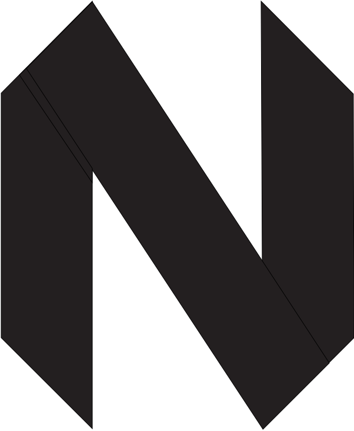

<!DOCTYPE html><html lang="en"><head><meta charset="utf-8"><meta name="viewport" content="width=device-width, initial-scale=1"><title>Stefan Niculae - Resume</title><meta name="description" content="My one-page resume"><link href="https://fonts.googleapis.com/css?family=Source+Sans+Pro" rel="stylesheet"><link rel="stylesheet" href="style.css"></head></html><body><div id="paper"><header id="name">Stefan Niculae</header><!-- TODO: js to update period--><section id="contact"><span id="email">stefan1niculae@gmail.com</span><span id="phone">0040 722 740 469</span><span id="location">Bucharest, RO</span><!-- <span class="linkedin"><a href="https://www.linkedin.com/in/stefan1niculae">stefan1niculae</a></span>--><!-- <span class="github"><a href="https://www.github.com/stefan1niculae">stefan1niculae</a></span>--></section><hr id="top-separator"><section id="work"><header>Experience</header><div class="content"><div class="entry" id="adobe"><div class="interval"><span class="from">March 2016</span><span class="to">Present</span><span class="length">11 months</span></div><span class="role">Data Science Intern</span><span class="place">Adobe</span><span class="description">Worked on determining retention-impactful product features. Implemented a predictor for user's next action in Adobe XD. Developed a product recommender system for Adobe BC.</span></div><div class="entry" id="intel"><div class="interval"><span class="from">June 2015</span><span class="to">Sept 2015</span><span class="length">4 months</span></div><span class="role">Performance Optimization Intern</span><span class="place">Intel</span><span class="description">Developed a tool which processes IoT performance metrics and provides statistical insight in a visual way. Worked on a robust spike-detection algorithm.</span></div><div class="entry" id="clu"><div class="interval"><span class="from">July 2014</span><span class="to">April 2015</span><span class="length">9 months</span></div><span class="role">Game Developer</span><span class="place">Clu Games</span><span class="description">Created catchy small-to-medium mobile games in Unity: <a href="https://play.google.com/store/apps/details?id=com.jmg.pet" title="Installable game">Android example</a>, <a href="https://itunes.apple.com/sg/app/nutcracker-finger-dash/id906391464" title="Installable game">iOS example</a></span></div><hr></div></section><section id="education"><header>Education</header><div class="content"><div class="entry" id="masters"><div class="interval"><span class="from">2016</span><span class="to expected">2018</span></div><span class="role">Master's in Artificial Intelligence</span><span class="place">University of Bucharest</span><span class="description">TA for <a href="https://stefan1niculae.github.io/haskell-labs" title="Laboratory site">Declarative Programming</a> and Formal Languages & Automata.</span></div><div class="entry" id="bachelors"><div class="interval"><span class="from">2013</span><span class="to">2016</span></div><span class="role">Bachelor of Computer Science</span><span class="place">University of Bucharest</span><span class="description"> Graduated with second highest grade, 9.8/10. Finished three-year Psychopedagogy module. Volunteered at the Student's Association, finance dept. <a href="https://github.com/stefan1niculae/school-projects" title="Screenshots &amp; sources">Interesting projects</a></span></div><div class="entry" id="trainings"><span class="role">Trainings</span><span class="description">Introductory for: user experience, public speaking, time management, leadership.</span></div><hr></div></section><section id="skills"><header>Skills</header><div class="content"><div class="category"><span class="name">Data Science</span><ul><li>Python</li><li>Machine Learning</li><li>Statistics</li></ul></div><div class="category"><span class="name">Web</span><ul><li>Django, Flask</li><li>React</li><li>SQL</li></ul></div><div class="category"><span class="name">Other</span><ul><li>C#</li><li>Haskell</li><li>Swift</li></ul></div><hr></div></section><section id="projects"><header>Personal Projects</header><div class="content"><div class="entry" id="holocron"><span class="name"><a href="https://holocron-ai.herokuapp.com">Holocron</a></span><span class="description wip">interactive visualization of learning and evaluating ML models.</span></div><div class="entry" id="easyvim"><span class="name"><a href="https://github.com/stefan1niculae/easyVim" title="Screenshots &amp; source">Easy Vim</a></span><span class="description">learning platform for Vim. Intelligent suggestions and gamification.</span></div><div class="entry" id="senile"><span class="name"><a href="https://github.com/stefan1niculae/senile-de-foc" title="Screenshots &amp; source">Senile de Foc</a></span><span class="description"> online multiplayer 2D tank game. Multiple play-styles and rich visual effects.</span></div><div class="entry" id="gsa"><span class="name">Google Student Ambassador</span><span class="description">Android meetings for learning and discussing projects.</span></div></div></section><section id="hobbies"><header>Hobbies</header><div class="content"><div class="hobby"><div></div><span class="name">Vim</span></div><div class="hobby"><div></div><span class="name">Cook</span></div><div class="hobby"><div></div><span class="name">Gym</span></div><div class="hobby"><div></div><span class="name">Sci-Fi</span></div><div class="hobby"><div></div><span class="name">Ping-Pong</span></div><div class="hobby"><div></div><span class="name">Volunteer</span></div></div></section><div id="paper-footer"><p>Visit <a href="https://stefan1niculae.github.io" title="Online version of resume">stefan1niculae.github.io</a> to view the online version and access links to sources & screenshots.</p></div></div><footer><p>Download <a href="Stefan Niculae - Resume.pdf" title="1-page, printer-ready" download="Stefan Niculae - Resume.pdf" target="_blank">pdf</a> or view <a href="https://github.com/stefan1niculae/stefan1niculae.github.io">source</a>.</p></footer></body>